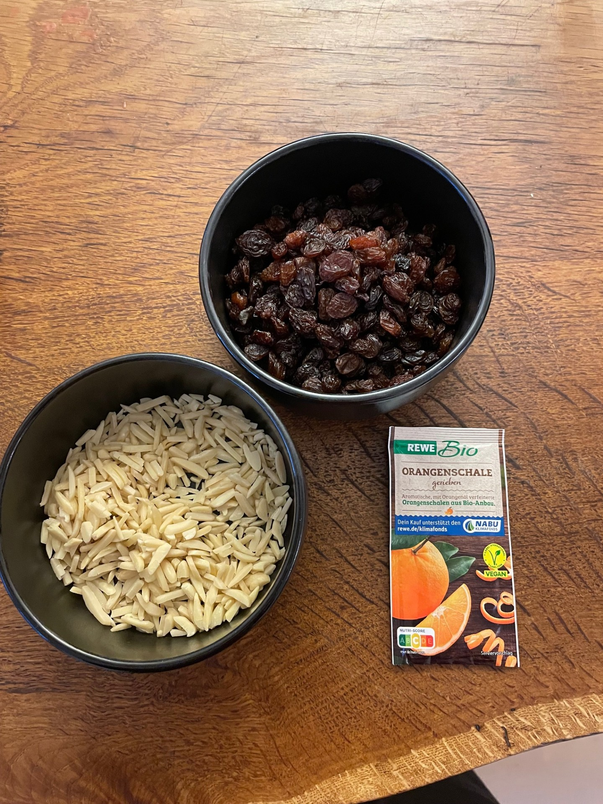
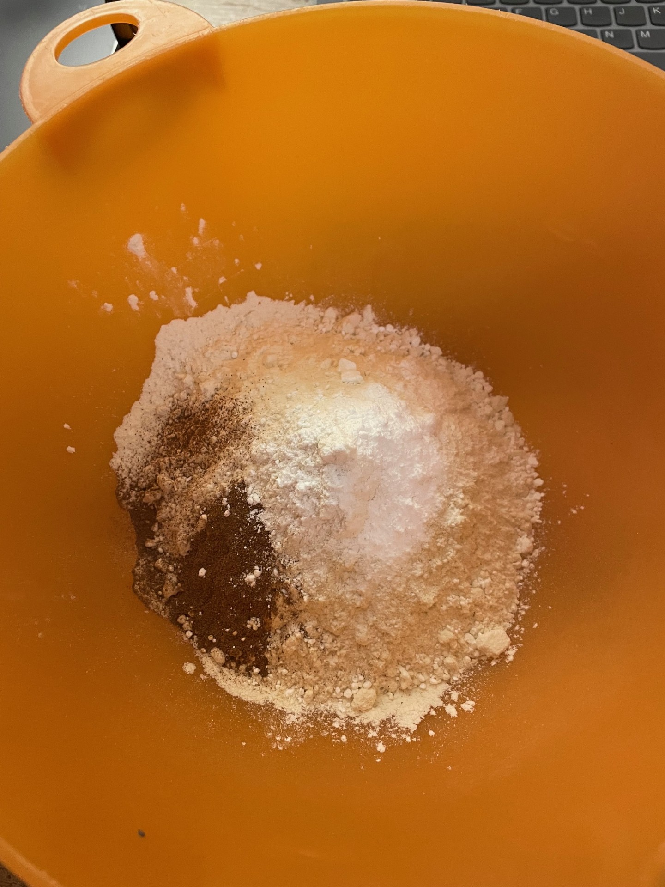

Instructions
- Preheat the oven to 180° top/bottom heat.
- Mix the butter and sugar until fluffy. Add the quark and mix briefly.
- In a separate bowl, mix together the flour, cinnamon, and baking powder. Add to the butter mixture with the orange zest, almonds, and raisins and mix briefly.
- Shape the dough into about 40 ping-pong ball-sized balls.
- Place on a baking tray lined with baking paper and bake in the middle of the oven for 12 - 15 minutes.
- Melt the butter while the stollen confectionery is in the oven.
- Brush the warm stollen confectionery with the melted butter and roll in powdered sugar.
- Leave to cool and enjoy.

Download the Recipe PDF
